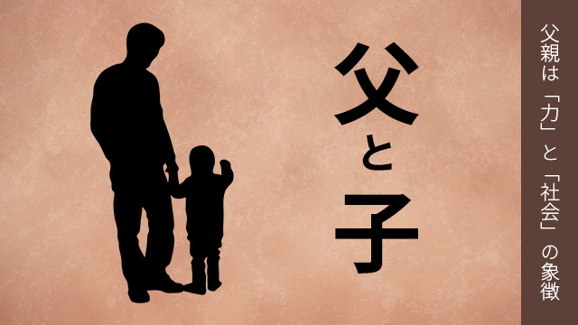

先日高校生の息子と野球観戦に出かけました。
子どもがまだ幼かったころは、休日になるとよく野球場に連れ出し親子で楽しく観戦したものですが、最近は子どもたちも部活や塾そして受験と忙しい日々が続きそれどころではなかったのです。
久しぶりの息子との野球観戦。しかし当たり前ですが高校生ともなると、昔のように大ハシャギで歓声をあげることもなく、男同士で淡々と試合経過を見つめるだけ。会話もあまり多くない。
私としては昔のように子どもが大喜びする姿をどこかで期待していたでしょう。何か少し物足りない気持ちでしたが、息子はすでに高校生。もう幼い子どもではないのだと改めて思い知らされた気分でした。
親は我が子をいつまでも「子ども」と思うものです。実際は思春期になると、子どもはすでに大人への階段を上がり始めているわけで中～高校生は、まさに大人への転換期に立っているといえます。
しかし親からすると、子どもが無邪気に走りまわっていたのがつい最近のことにしか思えません。（実際わずか数年前）
なのでこの時期は親のほうが頭の切り換えがうまくできないのです。
そして子どもが急速に大人びていくこと、自分の手を離れていくことへの寂しさを味わうのです。
ちょうど私が息子と野球観戦しながらも、いちまつの寂しさを感じていたように。
会話が成り立たない父と息子
ところで父と息子の関係は、母と娘の関係とはまた違ったニュアンスがあると感じます。
どんな違いでしょうか。
母親と娘の間にもいろいろな葛藤はありますが、父-息子と比べるとそれでもお互いがコミュニケーションする上での共通の基盤があるように思います。
母と娘は言語によるコミュニケーションを交わしながら互いの気持ちを交歓することができます。
要するに「会話による交流」ですね。
これが父親と息子だと途端に言葉数が減る！
たとえばウチの場合。
私：いまのカーブかな？
息子：ああ。
私：いやスライダーかな？
息子：ああ。
私：学校楽しいか？
息子：マアマア。
こんな調子。
会話というより単語をポツリポツリもらしているだけです。
男同士はテレもあり、また思春期の男の子は言語能力が著しく低下していることもあって会話によるコミュニケーションは成り立たないのです。
もちろん人それぞれなので、すべての父－息子が会話でコミュニケーションがとれないというわけではありませんが、母－娘に比べたら交わす言葉は少ないに違いありません。
母と娘は会話する。
父と息子は会話をあまりしない。
一般的にはそういうことになります。
さらに
母と娘は日常生活のことや交友関係など、個別具体的な話題を多くするのに対して、父と息子は会話するにしても、抽象的な話題だったり教訓的な話になりがちだといえます。
それなら父親は息子にどのように影響を与えるのでしょう。逆にいうと息子は父から何を学ぶのでしょうか。
父親は「力」と「社会」の象徴
息子にとって父親とはどういう存在なのか。
幼いとき、父親は息子にとって力強く頼もしい憧れの対象と映ります。現実の父親が強いか弱いかは問題ではなく、イメージとして父親は「力」の象徴なのです。
実際父は子どもにとって力強く抱き上げ、高々と持ち上げてくれたり肩ぐるまをしてくれる人であり、自分（子ども）ができないことを何でもやってくれるスーパーマンにも等しい存在です。また一家の担い手として世の中の仕組みを教えてくれる、いわば「社会的な存在」でもあるのです。
誰でも男の子なら、ある時期まで父親はヒーローであったことを記憶しているはずです。
しかし思春期を迎えるころから父親は息子にとって乗り超えるべきライバルとなります。と同時にそれは父親を何となく煙たい存在と感じることを意味します。
このとき父親があまりにも強圧的なタイプだと息子は委縮したまま伸び切れなくなりますが、普通は「煙たい存在」として遠ざけられます。
これは父－息子の宿命かもしれません。
元々父親像（イメージ）というものが「力」と「社会」を体現するものである以上、息子はその高い壁を乗り越えるために父親と対抗することによって自分を成長させる必要があるからです。
だからこの時期（息子が完全に大人になるまで）の父親は、息子に遠ざけられる寂しさ耐えなければなりません。
むしろ遠ざけられるほど己れの存在感が大きいことを自覚すべきなのです。
息子は父親の気配を意外と強く感じているものなのです。
ですから父親はこの時期こそ一層自分の言動や行動に責任を持つべきです。
簡単にいえば自分の「やるべきこと」としっかり向き合い、家庭内においても社会的存在としてもその責務をしっかりと果たすことが望まれます。
子どもは幼いときのように無邪気に父親にくっついてきたりしませんが、見ることもなく見ているものです。
昔から子は「親の背を見て育つ」と言いますがそのことばは父親にこそ向けられたものだと感じます。
やがて息子が完全に大人になったとき、自分が意外と多くを父親から学んでいたことに気づきます。
それは社会との向き合い方であったり、身体的なしぐさや価値観であったりしますが、その時になって初めて父親がどういう存在だったかを理解し懐かしく感じるものです。
最初から敬愛の対象である母親と異なり、父親は息子が大人（下手をすると中年にすぎ）になってからやっと懐かしく思い出される存在なのかも知れません。
息子にしてみたら、父親が年老いて最早乗り超えるべきライバルでなくなって初めて安心して、父親の影響力を受け入れるということになるのでしょう。
そのときようやく父親の偉大さも弱点も客観的に眺め、学ぶべきことを学ぶわけです。
つまり父親とは自分にとって最初のメンター、人生を教える師であったという気づきです。
父と息子。
この男同士の親子関係もこうして見るとけっこう大変なのです。
母親や娘にはなかなか理解できない厄介な側面があることを分かって欲しい。
息子との関係を模索するお父さん方へ。
忍耐が必要です。
でも息子が成人すると再び親密な関係が戻ってくるものです。それは思ったより楽しい時間となります。
それが昔から言う「息子と酒を飲む楽しみ」なのかも知れません。
エンライテックの詳細を見る ＞＞